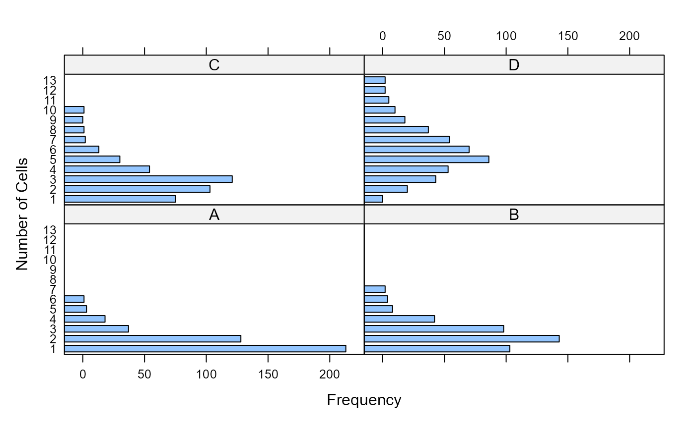

Counts of the number of yeast cells were made each of 400 regions in a 20 x 20 grid on a microscope slide, comprising a 1 sq. mm. area. This experiment was repeated four times, giving samples A, B, C and D.
Student (1906) used these data to investigate the errors in random sampling. He says "there are two sources of error: (a) the drop taken may not be representative of the bulk of the liquid; (b) the distribution of the cells over the area which is examined is never exactly uniform, so that there is an 'error of random sampling.'"
The data in the paper are provided in the form of discrete frequency
distributions for the four samples. Each shows the frequency distribution
squares containing a count of 0, 1, 2, ... yeast cells. These are
combined here in Yeast. In addition, he gives a table (Table I)
showing the actual number of yeast cells counted in the 20 x 20 grid for
sample D, given here as YeastD.mat.
Format
Yeast: A frequency data frame with 36 observations on the
following 3 variables, giving the frequencies of
sampleSample identifier, a factor with levels
ABCDcountThe number of yeast cells counted in a square
freqThe number of squares with the given
count
YeastD.mat: A 20 x 20 matrix containing the count of yeast cells in
each square for sample D.
Source
D. J. Hand, F. Daly, D. Lunn, K. McConway and E. Ostrowski (1994). A Handbook of Small Data Sets. London: Chapman & Hall. The data were originally found at: https://www2.stat.duke.edu/courses/Spring98/sta113/Data/Hand/yeast.dat
Details
Student considers the distribution of a total of \(Nm\) particles distributed over \(N\) unit areas with an average of \(m\) particles per unit area. With uniform mixing, for a given particle, the probability of it falling on any one area is \(p = 1/N\), and not falling on that area is \(q = 1 - 1/N\). He derives the probability distribution of 0, 1, 2, 3, ... particles on a single unit area from the binomial expansion of \((p + q)^{mN}\).
References
"Student" (1906) On the error of counting with a haemocytometer. Biometrika, 5, 351-360. http://www.medicine.mcgill.ca/epidemiology/hanley/c626/Student_counting.pdf
Examples
data(Yeast)
require(lattice)
# basic bar charts
# TODO: frequencies should start at 0, not 1.
barchart(count~freq|sample, data=Yeast, ylab="Number of Cells", xlab="Frequency")

barchart(freq~count|sample, data=Yeast, xlab="Number of Cells", ylab="Frequency",
horizontal=FALSE, origin=0)
# same, using xyplot
xyplot(freq~count|sample, data=Yeast, xlab="Number of Cells", ylab="Frequency",
horizontal=FALSE, origin=0, type="h", lwd=10)